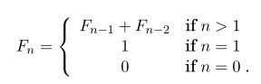

Here I'll try to write a post devoted to CS. Here an implementation for polynomial Fibonacci algorithm will be posted.
All examples below are based on the book "Algorithms" by Sanjoy Dasgupta, Christos H. Papadimitriou, Umesh Vazirani (ISBN-13: 978-0073523408, ISBN-10: 9780073523408).
All examples below will be written in the C programming language as a lingua franca in programming.
According to the above-mention book, Fibonacci sequence is a sequence of numbers each the sum of its two immediate predecessors. It can be written as (according to a book) 
The naive implementation of the Fibonacci algorithm is exponential in n (More formally fib = O(n * Fn), again, according to the book).
But a polynomial implementation has only the quadratic time complexity, that is more appropriate for practical tasks.
It can be realized as follows:
#include <assert.h>
#include <stdlib.h>
unsigned int fib(const unsigned int n) {
// memory allocation
const unsigned int size = n + 1;
unsigned int* p_fib_values = (unsigned int*)malloc(size * sizeof(unsigned int));
if (!p_fib_values)
return 0;
// alg body
p_fib_values[0] = 0;
p_fib_values[1] = 1;
for (unsigned int i = 2; i < size; ++i)
p_fib_values[i] = p_fib_values[i - 1] + p_fib_values[i - 2];
const unsigned int result = p_fib_values[n];
// memory deallocation
free(p_fib_values);
return result;
}
int main(void) {
assert(0 == fib(0));
assert(1 == fib(1));
assert(55 == fib(10));
return 0;
}
Such an approach assumes that if a memory allocation fails, the result is 0. Sometimes a user wants a more explicit error alerting mechanism.
First, we can transform the underlying type from "unsigned int" to "int" (which is signed). So we can write:
#include <assert.h>
#include <stdlib.h>
int fib(const int n) {
// memory allocation
const int size = n + 1;
int* p_fib_values = (int*)malloc(size * sizeof(int));
if (!p_fib_values)
return -1;
// alg body
p_fib_values[0] = 0;
p_fib_values[1] = 1;
for (unsigned int i = 2; i < size; ++i)
p_fib_values[i] = p_fib_values[i - 1] + p_fib_values[i - 2];
const int result = p_fib_values[n];
// memory deallocation
free(p_fib_values);
return result;
}
int main(void) {
assert(0 == fib(0));
assert(1 == fib(1));
assert(55 == fib(10));
return 0;
}
And there is another way - we can synthesize an artificial entity for storing the result of an operation:
typedef struct Result {
int was_error;
unsigned int value;
} Result;
Then all code can be written like the follows:
#include <assert.h>
#include <stdlib.h>
typedef struct Result {
int was_error;
unsigned int value;
} Result;
Result fib(const unsigned int n) {
Result result = { .was_error = 1, .value = 0 };
// memory allocation
const unsigned int size = n + 1;
unsigned int* p_fib_values = (unsigned int*)malloc(size * sizeof(unsigned int));
if (!p_fib_values)
return result;
// alg body
p_fib_values[0] = 0;
p_fib_values[1] = 1;
for (unsigned int i = 2; i < size; ++i)
p_fib_values[i] = p_fib_values[i - 1] + p_fib_values[i - 2];
result = (Result){ .was_error = 0, .value = p_fib_values[n] };
// memory deallocation
free(p_fib_values);
return result;
}
int main(void) {
Result fib_0 = fib(0);
assert(!fib_0.was_error);
assert(0 == fib_0.value);
Result fib_1 = fib(1);
assert(!fib_1.was_error);
assert(1 == fib_1.value);
Result fib_10 = fib(10);
assert(!fib_10.was_error);
assert(55 == fib_10.value);
return 0;
}
Of cource all programmers know this algorithm, but this article is more about showing that good old C programming language can be regarded as a full-fledged programming language for Computer Science tasks.